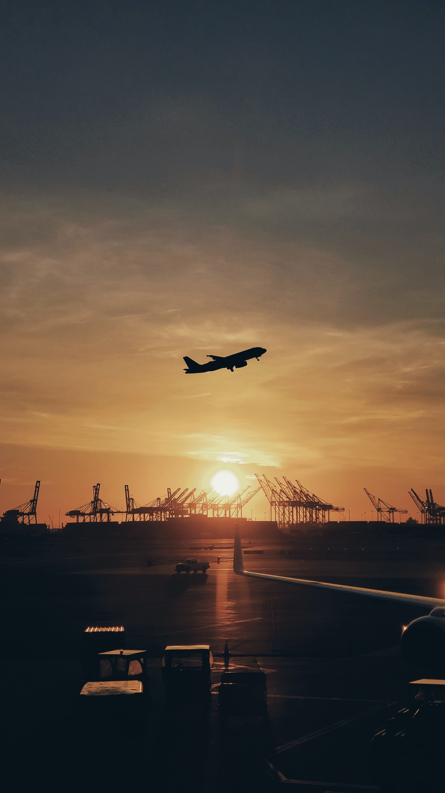

History of Traveling
Travel dates back to antiquity where wealthy Greeks and Romans would travel for leisure to their summer homes and villas in cities such as Pompeii and Baiae.[8] While early travel tended to be slower, more dangerous, and more dominated by trade and migration, cultural and technological advances over many years have tended to mean that travel has become easier and more accessible.[9] Humankind has come a long way in transportation since Christopher Columbus sailed to the New World from Spain in 1492, an expedition which took over 10 weeks to arrive at the final destination; to the 21st century when aircraft allows travel from Spain to the United States overnight.
Travel in the Middle Ages offered hardships and challenges, though it was important to the economy and to society. The wholesale sector depended (for example) on merchants dealing with/through caravans or sea-voyagers, end-user retailing often demanded the services of many itinerant peddlers wandering from village to hamlet, gyrovagues (wandering monks) and wandering friars brought theology and pastoral support to neglected areas, traveling minstrels toured, and armies ranged far and wide in various crusades and in sundry other wars.[8] Pilgrimages were common in both the European and Islamic world and involved streams of travelers both locally and internationally.[10]
In the late 16th century, it became fashionable for young European aristocrats and wealthy upper-class men to travel to significant European cities as part of their education in the arts and literature. This was known as the Grand Tour, and included cities such as London, Paris, Venice, Florence, and Rome. However, the French Revolution brought with it the end of the Grand Tour.[8]
Travel by water often provided more comfort and speed than land-travel, at least until the advent of a network of railways in the 19th century. Travel for the purpose of tourism is reported to have started around this time when people began to travel for fun as travel was no longer a hard and challenging task. This was capitalized on by people like Thomas Cook selling tourism packages where trains and hotels were booked together. [11] Airships and airplanes took over much of the role of long-distance surface travel in the 20th century, notably after the Second World War where there was a surplus of both aircraft and pilots.[8] Air travel has become so ubiquitous in the 21st century that one woman, Alexis Alford, visited all 196 countries before the age of 21
Purpose & Motivation
Reasons for traveling include recreation,[4] holidays, rejuvenation,[5]tourism[4] or vacationing,[4]research travel,[4] the gathering of information, visiting people, volunteer travel for charity, migration to begin life somewhere else, religious pilgrimages[4] and mission trips, business travel,[4]trade, [4]commuting, obtaining health care,[4] waging or fleeing war, for the enjoyment of traveling, or other reasons. Travelers may use human-powered transport such as walking or bicycling; or vehicles, such as public transport, automobiles, trains, ferries , boats, cruise ships and airplanes.

Safety
Authorities emphasize the importance of taking precautions to ensure travel safety.[16] When traveling abroad, the odds favor a safe and incident-free trip, however, travelers can be subject to difficulties, crime and violence.[17] Some safety considerations include being aware of one’s surroundings,[16] avoiding being the target of a crime,[16] leaving copies of one’s passport and itinerary information with trusted people,[16] obtaining medical insurance valid in the country being visited[16] and registering with one’s national embassy when arriving in a foreign country. [16]
Many countries do not recognize drivers’ licenses from other countries; however most countries accept international driving permits.[18] Automobile insurance policies issued in one’s own country are often invalid in foreign countries, and it is often a requirement to obtain temporary auto insurance valid in the country being visited.[18] It is also advisable to become oriented with the driving rules and regulations of destination countries.[18] Wearing a seat belt is highly advisable for safety reasons; many countries have penalties for violating seatbelt laws.[18]
Geographic Types
Travel may be local, regional, national (domestic) or international. In some countries, non-local internal travel may require an internal passport, while international travel typically requires a passport and visa. Tours are a common type of travel. Examples of travel tours are expedition cruises,[13] small group tours,[14] and river cruises.[15]

There are three main statistics which may be used to compare the safety of various forms of travel (based on a Department of the Environment, Transport and the Regions survey in October 2000): [19]